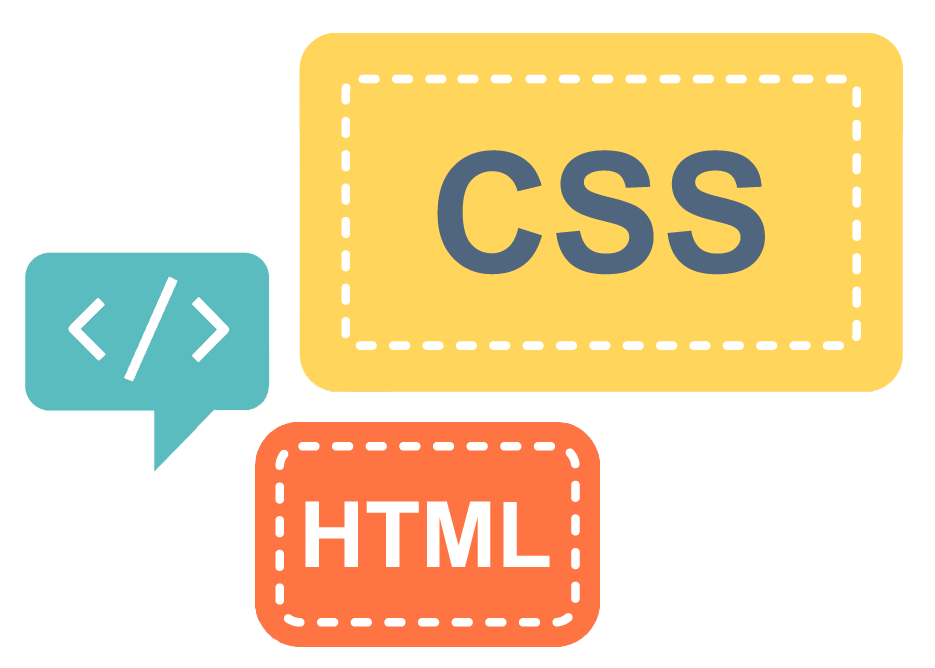

Самой большая проблема – не потеряться в огромном количестве информации. Постараемся освоить тот минимум, с которым просто необходимо разобраться, если хочешь работать в этой сфере.
Для тех, кто впервые в этой лодке, могу посоветовать пользоваться уже готовыми удачными цветовыми решениями профессиональных веб-дизайнеров. Где же можно вдохновляться работами гуру? Например здесь: color.romanuke.com На этом ресурсе можно фильтровать оттенки в нужной гамме, что очень удобно.
Со шрифтами всё сложно. Это целая наука, в тайны которой можно погружаться всю жизнь. Для того, чтоб помочь разобраться, как же всё-таки подбирать шрифты, мы проведём ещё не одно занятие на эту тему. Но тут есть маленькая хитрость. Давным давно уже были подобраны оптимальные решения по комбинированию шрифтов. И об этом мы тоже поговорим.
Композиция – это основной критерий визуальной приятности. Если композиция гармонична, это уже 50% успеха. Но это тоже тот параметр, который «прокачивается» не один год. У нас обязательно будут отдельные уроки посвящённые композиции.
Очень полезная вещь и для дизайнера и для верстальщика. Сетка помогает навести порядок в макете, облегчает расположение элементов на странице, а так же, сетка является одной из главных составляющих хорошей композиции.
Чтобы не изобретать велосипед, всегда полезно смотреть и учиться у лучших в своём деле. В дизайне важно быть «в теме», следить за тенденциями и просто уметь грамотно пользоваться удачными наработками. Вот несколько сайтов, которые могут помочь в этом:
Ещё одна особенность работы веб-дизайнера заключается в том, чтоб самостоятельно уметь искать необходимую информацию. Поэтому совет без ссылок: «Для того, чтоб начать тренироваться и что-то пробовать, советую найти документы с разными лендингами, мобильными приложениями, респонсивами (сайты с «резиновой» вёрсткой) и сделать на основе уже готовых макетов свой редизайн».
На самом деле, точного ответа нет. Где удобнее, там и создавайте ваши макеты. Но в любой программе нужно научиться работать со смарт объектами, масками и со слоями.
Если уже взялись делать макеты, не ленитесь – думайте!
Продумайте:
Дальше, приступайте к разработке контента сайта, его структуры, навигации, дизайна. Ищите референсы (аналоги прямые и не прямые). И просто работайте и учитесь :)
У вас всё получиться!
